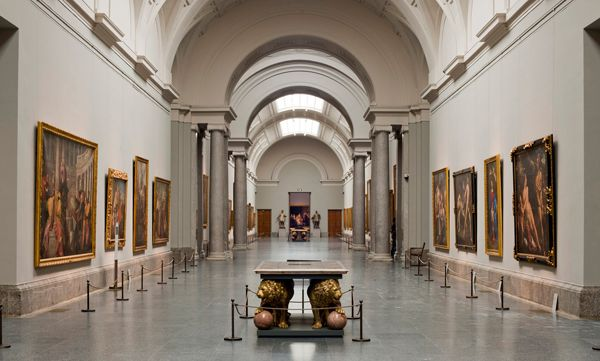
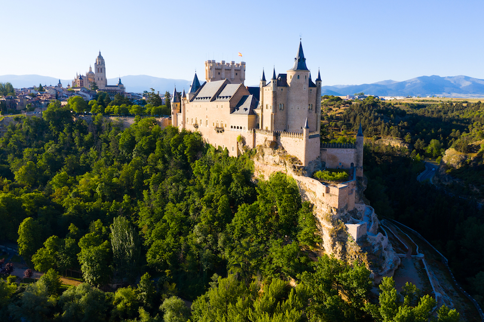
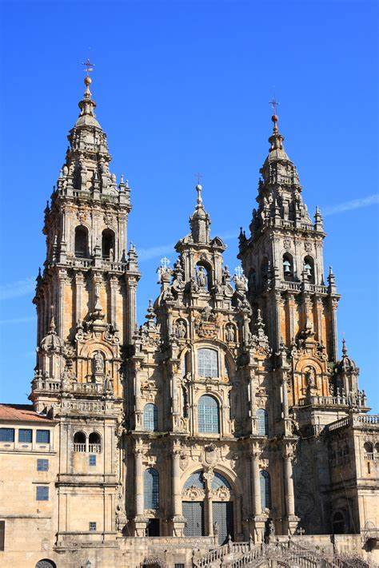
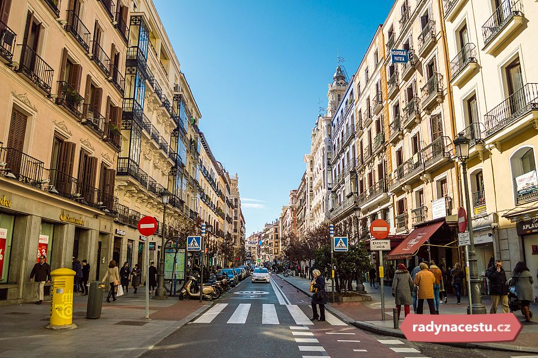

The
Basílica i Temple Expiatori de la Sagrada Família, otherwise known as
Sagrada Família, is a church under construction in the Eixample district
of Barcelona, Catalonia, Spain. It is the largest unfinished Catholic
church in the world.
The Sagrada Família is a one-of-a-kind temple, for its origins,
foundation and purpose. Fruit of the work of genius architect Antoni
Gaudí, the project was promoted by the people for the people. Five
generations now have watched the Temple progress in Barcelona. Today,
more than 140 years after the laying of the cornerstone, construction
continues on the Basilica. |
.jpeg) |
.jpeg) |
The Prado Museum, officially known as
Museo Nacional del Prado, is the main Spanish national art museum,
located in central Madrid. It is widely considered to house one of the
world's finest collections of European art, dating from the 12th century
to the early 20th century, based on the former Spanish royal collection,
and the single best collection of Spanish art. Founded as a museum of
paintings and sculpture in 1819, it also contains important collections
of other types of works. The Prado Museum is one of the most visited
sites in the world and is considered one of the greatest art museums in
the world. The numerous works by Francisco Goya, the single most
extensively represented artist, as well as by Hieronymus Bosch, El
Greco, Peter Paul Rubens, Titian, and Diego Velázquez, are some of the
highlights of the collection. Velázquez and his keen eye and sensibility
were also responsible for bringing much of the museum's fine collection
of Italian masters to Spain, now one of the largest outside of Italy. |
| The other main
attraction is the elegant Alcazar of Segovia, set atop a rocky outcrop
overlooking the city. Said to have inspired Walt Disney’s Sleeping
Beauty Castle, the medieval castle and palace features lots of fine
architecture and was once one of the favorite royal residences of the
Kings of Castille. |
 |
|
 |
The Santiago de Compostela Arch
cathedral Basilica (Spanish and Galician: Catedral Basilica de Santiago
de Compostela) is part of the Metropolitan Archdiocese of Santiago de
Compostela and is an integral component of the Santiago de Compostela
World Heritage Site in Galicia, Spain. |
| Located in
the heart of Madrid, Calle Mayor is one of the largest and most original
streets of the Spanish capital. Thanks to it we connect the Puerta del
Sol with the Cuesta de la Vega; in addition, in its kilometer of length are
preserved more than 6 centuries of valuable history. Walking
along the Calle Mayor you
can admire majestic monuments such as buildings, stores, palaces and
squares, which are witnesses of great events and changes in the country. |
 |